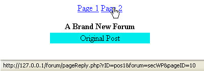
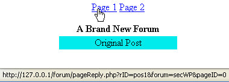

The pageReply.php page
This lesson is part of an ongoing Foruml tutorial. The first part is here: Build your own Forum, along with all the files you need. The previous lesson is here.
The code for the pageReply.php page is a little bit longer than the others. This page has to do the following:
- Check if the user is a member. If so, display a link so they can post a reply.
- Set up some functions to handle the SQL
- GET the post and the forum section that the user is replying to
- GET the pageID just in case there is more than 1 page of replies, allowing us to set hyperlinks for each page
- Display information about the original post
- Display which member posted
- Find out which members replied
- Display all the replies, but limit them to ten replies per page
When a user clicks on a Post, they will see this page:
Reply to a Post (opens in a new window 125K)
This is the page we're now going to examine.
The code that checks if the user is a member or not is the same code for the previous section. After the functions, though, we need to GET the data that was passed by the previous page. This is the data in the rID variable, the forum variable, and pageID variable:
if ($_SERVER['REQUEST_METHOD'] == 'GET') {
$secCode = '';
$postID = '';
if (isset($_GET['rID'])) {
$postID = $_GET['rID'];
$secCode = $_GET['forum'];
$pageID = $_GET['pageID'];
}
}
Here, we're checking to see if the page was loaded using the GET method. If it was, we first set a variable called $secCode and a variable called $postID to blank strings. We then test to see if the rID variable has been set. If so, we can get the information that was handed by the previous pages:
$postID = $_GET['rID'];
$secCode = $_GET['forum'];
$pageID = $_GET['pageID'];
The code after that, you've already met in the previous section: Test to see if secCode is blank, build up some HTML for the reply link, and open a connection to the database.
If the database is found, we first need to find out how many people relied to a Post:
$repCode = getReplySQL($secCode);
$repCode = $repCode . "'" . $postID . "'";
$result = mysql_query($repCode);
$totalRows = mysql_num_rows($result);
First, we make a call to one of the functions at the top of the page. This returns some SQL. The second line adds the postID to the SQL. When the SLQ is executed on the third line, we'll have all the replies for a particular post. The forth line tells us how many replies there are in total. We're putting this into a variable called $totalRows.
If the $totalRows is not zero, then we can get some more SQL. Since we're only going to be displaying ten links per pages, we can limit the data we pull from the replies table. After all, there's no sense in getting all the replies, if we're not going to be displaying all of them. To limit the number of replies, we have this:
$repCode = getReplySQL($secCode);
$repCode = $repCode . "'" . $postID . "'" . " LIMIT
" . $pageID . ", 10";
The first line again makes a call to the functions at the top of the page. This gets some SQL that we can use against the reply tables.
The second line is where we're building up some SQL to limit the number of replies that will be pulled from the table. The first part of the second line just adds the $postID to the SQL:
$repCode = $repCode . "'" . $postID . "'"
The rest of the line is where we're limiting the results:
LIMIT " . $pageID . ", 10";
The SQL command LIMIT, as its name suggests, allows you to limit the number of results that you pull from a table. Take this SQL as an example:
SELECT * FROM tblReply LIMIT 0 10
The first number after LIMIT is which record from the table you want to start at. The number zero means start pulling data from the first record in the table. The second number says how many records you want to grab.
In our code, the start value is coming from the variable called $pageID. This is passed to the code when a hyperlink is clicked. It started off as zero, if you remember, because this will be the first page of results. If we wanted to start pulling data from row number 11, as we do if there is more than 10 replies, then we need to change the value in the variable called $pageID. This values gets changed later, as you'll see. You can then add it to the hyperlinks.
We can then execute the SQL, and put the data from the table into an array:
$result = mysql_query($repCode);
$numRows = mysql_num_rows($result);
if ($result) {
for ($i = 0; $i < $numRows; ++$i) {
$replyData[$i] = mysql_fetch_array($result);
}
}
Notice how the loop goes from 0 to $numRows. Inside of the loop, we're putting each row from the table into an array called $replyData.
But we also need to find out how many links are needed. If there are 11 replies to a post, we need 2 links. Clicking the second link will take you to the second page of replies. If we had 21 replies, we'd need three links - 10 on the first 2 pages, and 1 on the third. The code that counts how many links are needed is this:
$cnt = count($replyData);
$linkNum = floor($totalRows / 10);
The first line just counts how many replies are in the array. We pass this to a variable called $cnt for use later in the code.
The next line divides the number of rows by 10. We use the floor( ) function to get rid of any "point something" at the end. 11 divided by 10, for example, would give us 1.1. We don't need the .1 at the end, so floor( ) will strip this off.
The next bit of code gets information about the thread:
$result = mysql_query($posCode);
$numRows = mysql_num_rows($result);
if ($numRows == 1) {
$db_field = mysql_fetch_assoc($result);
$topic = $db_field['threadTopic'];
$postText = $db_field['postText'];
$datePosted = $db_field['datePosted'];
$memPost = $db_field['memberID'];
}
We first execute the SQL we set up at the top of the code. This returns the original Post. But we need to check if a row is returned. If a row is returned then we fetch it back as an array:
$db_field = mysql_fetch_assoc($result);
The variable $db_field will then hold the fields from the Posts table. The next four lines return the threadTopic, the posText, the datePosted, and the memberID. These are all fields in the post tables. We then put theses into variables of their own:
$db_field = mysql_fetch_assoc($result);
$topic = $db_field['threadTopic'];
$postText = $db_field['postText'];
$datePosted = $db_field['datePosted'];
$memPost = $db_field['memberID'];
We can then use these variables later in the code.
To find out which member posted the thread, we have this:
$memSQL = "SELECT * from members WHERE memberID =
'$memPost'";
$result = mysql_query($memSQL);
if ($result) {
$db_field = mysql_fetch_assoc($result);
$postName = $db_field['username'];
}
This is the same code you met in the previous section. We use SQL to pull the record from the members table WHERE there is a match on the memberID fields. This is then placed into a variable called $postName.
To find out which members replied to the post, we have this code:
for ($i = 0; $i < $cnt; ++$i) {
$memb = $replyData[$i]['memberID'];
$memSQL = "SELECT * from members WHERE memberID = '$memb'";
$result2 = mysql_query($memSQL);
if ($result2) {
$db_field = mysql_fetch_assoc($result2);
$memName = $db_field['username'];
$replyData[$i]['member'] = $memName;
}
}
What we're doing here is looping round the $replyData array. This is the array we set up earlier that holds information about the replies. We just want the memberID. We then execute some SQL on the members table WHERE there is a match on the memberID field. Once we find a match, we add a new key to the $replyData array:
$memName = $db_field['username'];
$replyData[$i]['member'] = $memName;
The next thing we do is to print the links out, so that users can go to other pages. As a reminder, here's the links we want to print out:
Hold your mouse over these links and you'll see this in the status bar:

Or this, for Page 1:

The only thing to change here is the pageID. If you click Page 1, pageID is zero. This is because you want to pull records 0 to 10 from the replies. For page 2, pageID is 10. You can then use this number to pull records number 11 onwards. Here's the code that does that:
$linkCount = 0;
$pageCount = 1;
for ($i = 0; $i <= $linkNum; ++$i) {
$linkPages = "<A HREF = pageReply.php?rID=" . $postID . "&forum=" . $secCode;
$linkPages = $linkPages . "&pageID=" . $linkCount . ">Page " . $pageCount . "</A>";
print $linkPages . " ";
$linkCount = $linkCount + 10;
$pageCount++;
}
The variable $linkNum holds the number of pages that are needed. What we're doing here is looping round and creating links. The links are printed out with:
print $linkPages . " ";
But the two lines above this are where the hyperlinks get built. Study the code and see if you can work out how it works. Compare the address in the status bar, with the code in the loop. Here's the status bar (concentrate on everything after pageReply.php):
And here's the two lines in the code that builds the link:
$linkPages = "<A HREF = pageReply.php?rID=" . $postID . "&forum=" . $secCode;
$linkPages = $linkPages . "&pageID=" . $linkCount . ">Page " . $pageCount . "</A>";
Finally, we can then print out the HTML table, using all the information we
have gathered so far. Again, study the code. You should, by now, be able to
figure out what's going on. But we're just looping round printing table data.
The only thing that remains now is to look at the code for posting a reply, and for adding a new post to the forum. We'll do that next.